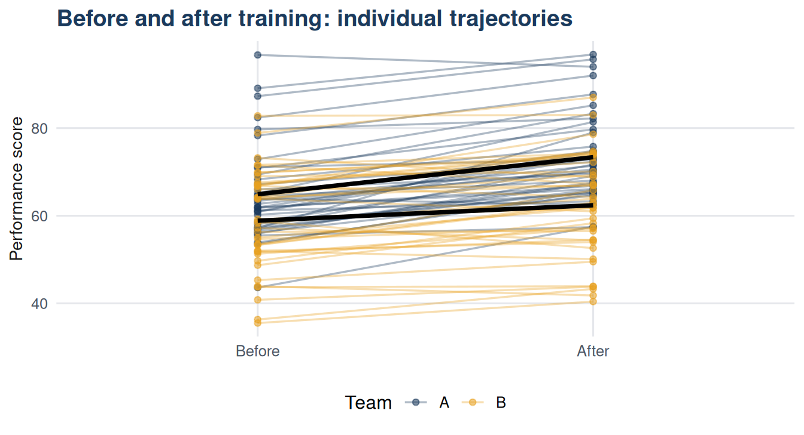

| Type | Definition | Example | Advantage |
|---|---|---|---|
| Independent samples | Two separate groups; membership in one group does not determine membership in the other. | Team A vs Team B sales scores; men vs women; treatment vs control. | Simpler to organise; no need for matching or repeated measurement. |
| Dependent (paired) samples | The same individuals measured twice, or individuals matched in pairs before assignment. | Employee performance before and after training; matched twins in a drug trial. | Controls for individual differences; usually more powerful for detecting a real effect. |
23 Chapter 23: Independent and Dependent Samples t-Tests
23.1 Learning objectives
By the end of this chapter, the student should be able to:
- Distinguish independent from dependent (paired) samples.
- Conduct and interpret an independent samples t-test.
- Conduct and interpret a paired t-test.
- Select the appropriate test for a given study design.
- Report effect size alongside the test result.
23.2 Introduction
The one-sample t-test in Chapter 22 compared a sample mean to a fixed standard. Most business comparisons involve two groups: Team A versus Team B, before versus after, treatment versus control. This chapter covers both situations: independent samples (the two groups contain different people) and dependent samples (the same people are measured twice, or pairs of people are matched).
The dataset contains performance data for 80 sales representatives: 40 from Team A and 40 from Team B, each measured before and after a training programme.
23.3 Independent vs dependent samples
23.4 The independent samples t-test
The independent samples t-test compares the means of two unrelated groups.
\[H_0: \mu_1 = \mu_2 \qquad H_1: \mu_1 \neq \mu_2 \text{ (or directional)}\]
\[t = \frac{\bar{x}_1 - \bar{x}_2}{\sqrt{s_1^2/n_1 + s_2^2/n_2}}\]
This is Welch’s t-test, which does not assume equal variances. It is the default in R’s t.test().
Code
library(dplyr)
ind_summary <- df |>
group_by(team) |>
summarise(
n = n(),
mean_before = round(mean(score_before), 2),
sd_before = round(sd(score_before), 2),
mean_after = round(mean(score_after), 2),
sd_after = round(sd(score_after), 2)
)
knitr::kable(ind_summary,
col.names = c("Team","n","Mean (before)","SD (before)",
"Mean (after)","SD (after)"),
caption = "Table 23.2: Descriptive summary by team") |>
kableExtra::kable_styling(bootstrap_options = c("striped","hover"),
full_width = FALSE)| Team | n | Mean (before) | SD (before) | Mean (after) | SD (after) |
|---|---|---|---|---|---|
| A | 40 | 64.92 | 10.65 | 73.37 | 9.96 |
| B | 40 | 58.87 | 11.19 | 62.39 | 11.47 |
Code
# Compare post-training scores between teams
team_A_after <- df$score_after[df$team == "A"]
team_B_after <- df$score_after[df$team == "B"]
ind_result <- t.test(team_A_after, team_B_after,
alternative = "two.sided",
var.equal = FALSE)
ind_output <- data.frame(
Element = c("Mean (Team A)", "Mean (Team B)", "Difference",
"t statistic", "df", "p-value",
"95% CI lower", "95% CI upper"),
Value = round(c(mean(team_A_after), mean(team_B_after),
mean(team_A_after) - mean(team_B_after),
ind_result$statistic, ind_result$parameter,
ind_result$p.value,
ind_result$conf.int[1],
ind_result$conf.int[2]), 3)
)
knitr::kable(ind_output,
col.names = c("Element","Value"),
caption = "Table 23.3: Independent samples t-test: post-training scores") |>
kableExtra::kable_styling(bootstrap_options = c("striped"),
full_width = FALSE)| Element | Value |
|---|---|
| Mean (Team A) | 73.367 |
| Mean (Team B) | 62.392 |
| Difference | 10.975 |
| t statistic | 4.569 |
| df | 76.506 |
| p-value | 0.000 |
| 95% CI lower | 6.191 |
| 95% CI upper | 15.759 |
Code
# Cohen's d for independent samples
n_A <- length(team_A_after); n_B <- length(team_B_after)
s_p <- sqrt(((n_A-1)*var(team_A_after) + (n_B-1)*var(team_B_after)) /
(n_A + n_B - 2))
d_ind <- (mean(team_A_after) - mean(team_B_after)) / s_p
cat("Cohen's d =", round(d_ind, 3), "\n")Cohen's d = 1.022 23.5 The paired t-test
When the same individuals are measured before and after an intervention, the paired t-test uses the difference for each person as the unit of analysis.
\[d_i = x_{i,\text{after}} - x_{i,\text{before}}\]
\[t = \frac{\bar{d}}{s_d / \sqrt{n}}\]
where \(\bar{d}\) is the mean difference and \(s_d\) is the standard deviation of the differences.
Code
# Paired test: before vs after for all 80 reps
paired_result <- t.test(df$score_after, df$score_before,
paired = TRUE,
alternative = "greater", # expect improvement
conf.level = 0.95)
df <- df |> mutate(difference = score_after - score_before)
paired_output <- data.frame(
Element = c("Mean difference (after - before)", "SD of differences",
"SE of mean difference", "t statistic", "df",
"p-value (one-tailed)", "95% CI lower"),
Value = round(c(mean(df$difference), sd(df$difference),
sd(df$difference)/sqrt(nrow(df)),
paired_result$statistic, paired_result$parameter,
paired_result$p.value,
paired_result$conf.int[1]), 3)
)
knitr::kable(paired_output,
col.names = c("Element","Value"),
caption = "Table 23.4: Paired t-test: before vs after training") |>
kableExtra::kable_styling(bootstrap_options = c("striped"),
full_width = FALSE)| Element | Value |
|---|---|
| Mean difference (after - before) | 5.989 |
| SD of differences | 5.415 |
| SE of mean difference | 0.605 |
| t statistic | 9.892 |
| df | 79.000 |
| p-value (one-tailed) | 0.000 |
| 95% CI lower | 4.981 |

23.6 Why pairing increases power
Code
# Compare: paired test vs unpaired test on the same data
unpaired <- t.test(df$score_after, df$score_before,
paired = FALSE, alternative = "greater")
paired <- t.test(df$score_after, df$score_before,
paired = TRUE, alternative = "greater")
power_df <- data.frame(
Test = c("Unpaired (ignores pairing)", "Paired (exploits pairing)"),
t_stat = round(c(unpaired$statistic, paired$statistic), 3),
p_value = round(c(unpaired$p.value, paired$p.value), 4)
)
knitr::kable(power_df,
col.names = c("Test","t statistic","p-value (one-tailed)"),
caption = "Table 23.5: Effect of pairing on test sensitivity") |>
kableExtra::kable_styling(bootstrap_options = c("striped"),
full_width = FALSE)| Test | t statistic | p-value (one-tailed) |
|---|---|---|
| Unpaired (ignores pairing) | 3.251 | 7e-04 |
| Paired (exploits pairing) | 9.892 | 0e+00 |
The paired test produces a larger t statistic because it removes the between-person variability that inflates the denominator of the unpaired test.
23.7 Assumptions
| Test | Assumption | How to check |
|---|---|---|
| Independent samples t-test | Independence of observations within each group. | By study design. |
| Independent samples t-test | Approximate normality in each group, or large n. | Histogram or Q-Q plot of each group. |
| Paired t-test | Differences are independent across pairs. | By study design (same person, same conditions). |
| Paired t-test | Differences are approximately normally distributed, or n is large. | Histogram or Q-Q plot of differences. |
23.8 Summary
The independent samples t-test compares means from two unrelated groups. Welch’s version, the default in R, does not require equal variances. The paired t-test analyses the differences within matched pairs and is more powerful when individual differences are large. Always report the mean difference, confidence interval, and Cohen’s d alongside the t statistic and p-value.
23.9 Key terms
| Term | Definition |
|---|---|
| Independent samples | Two groups where membership of one does not determine membership of the other. |
| Dependent (paired) samples | Two measurements on the same individual, or matched pairs. |
| Welch's t-test | An independent samples t-test that does not assume equal variances; default in R. |
| Paired t-test | A test analysing within-pair differences; reduces variability due to individual differences. |
| Mean difference | The average of (after - before) differences in a paired design. |
23.10 Exercises
Using Table 23.3, is the difference in post-training scores between Team A and Team B statistically significant at \(\alpha = 0.05\)? State the conclusion in plain language and report Cohen’s d.
A before-after study has 20 participants. The mean score improvement is 4.2 points with SD of differences = 6.1. Compute t and determine whether the improvement is significant at \(\alpha = 0.05\) (one-tailed).
Using Table 23.5, the paired test gives a larger t statistic than the unpaired test on the same data. Explain intuitively why this happens.
A researcher compares two groups using an independent samples t-test. She finds p = 0.08. Her colleague suggests re-running the test with
var.equal = TRUE. Would this change the result substantially, and should she do it?Draw a diagram showing a study design where the paired t-test is appropriate. Label the “before” and “after” measurements for at least four participants.